DesignOps - Sample - Travel Agency web back-office
This article refers to a design file for a Travel Agency web back office made with the Sketch design tool and exported by GxDesignOps plugin in .gxsketch format.
Sample download
 Travel Agency Web Backoffice.gxsketch
Travel Agency Web Backoffice.gxsketch
Importing gxsketch file
Basically, you must follow the instructions described in the Sketch Import option article.
Once you select the .gxsketch file from your filesystem, the Sketch to GeneXus dialog will be shown as follows:
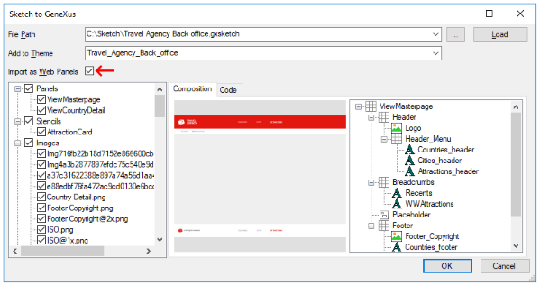
When you are sure you want to import the design file, just click on the "OK" button and the Output dialog (General tab) will show you the import progress.
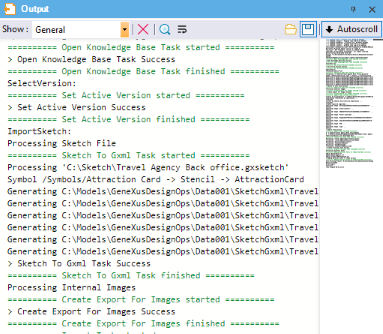
Once it has finished importing, check the generated panels and how they look. Also, check the theme-classes, image objects, and file objects (fonts) imported.
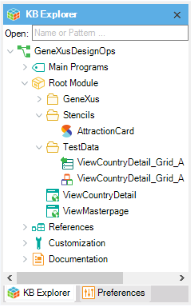
As you may notice, there are some changes that you must do before running your application.
Applying manual changes
First of all, none of the generated panels have the Main program property set. Even if you set it for ViewCountryDetail object, you will find that your application does not include a Master Page even when the design file includes an Artboard for it.
| 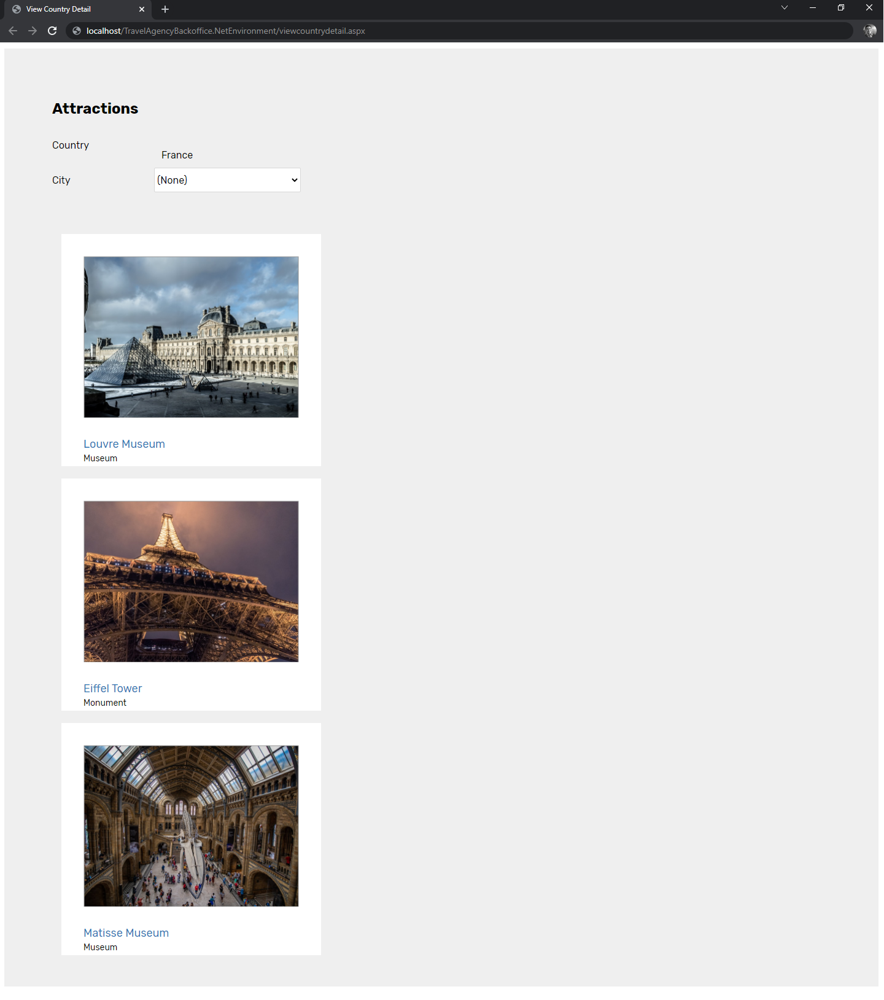 |
This section aims to guide you on how you can identify which changes must be applied before running this sample.
- The ViewMasterPage object, instead of being a web panel object, should be a Web Master Panel object. The Import Sketch option does not support this kind of declarations yet.
So, you must change it manually by setting the Type Property as 'Master Page'.
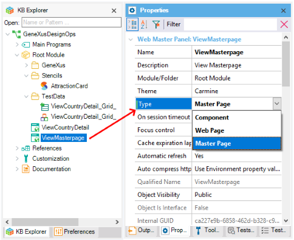
- After changing the Type Property of ViewMasterPage object, note that GeneXus does not allow you to save the object and shows the following message:
error: One Content Placeholder control is needed in master pages
The reason is that the Web Master Panel object does not contain a Content Placeholder control. You must add it manually because Sketch Import does not recognize the corresponding Artboard as a Master Page in the first place (as it was mentioned in bullet 1).
The Content Placeholder control must be added in the third row of the Master Page layout. After adding it, save the object settings.
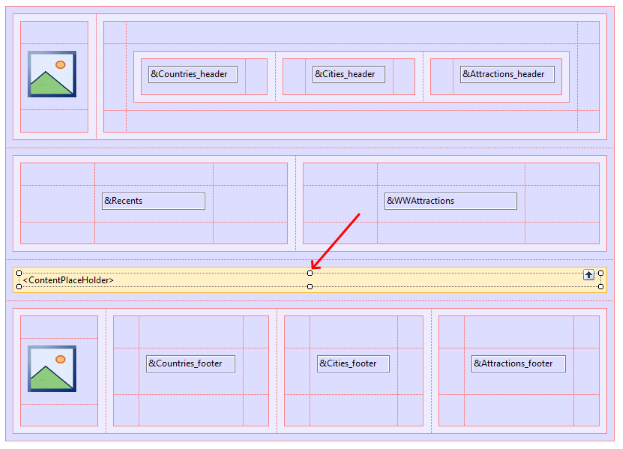
- The ViewCountryDetail web panel, by default, will have the Master Page property with "(none)" value. As you have defined the ViewMasterPage object as a Web Master Panel object, you must change that property to this value.
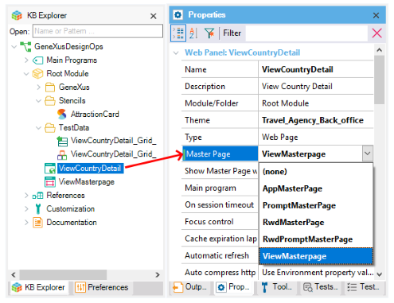
- By default, the Theme object is set as Carmine, but the design was imported with a new Theme object named 'Travel_Agency_Back_office' (although you could select Carmine object to merge it with). The Import Sketch option does not change the Theme property for the generated Web Panel objects, so you must set them manually.
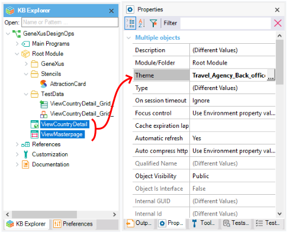
- Finally, set as True the Main program property of the ViewCountryDetail web panel in order to run the application.
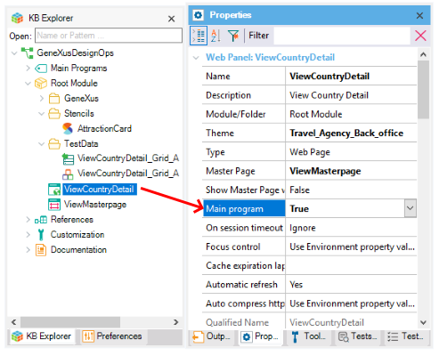
Despite these changes, think about how much time you would have to spend trying to design those panels, with their theme-classes, fonts, and colors.
Definitively, you have saved a lot!
Runtime execution
After applying the changes described in the previous section, and running the ViewCountryDetail web panel, you will have the following result.
| Designer | Developer | ||
| Sketch | Artboard | GeneXus | Browser |
| Master Page | 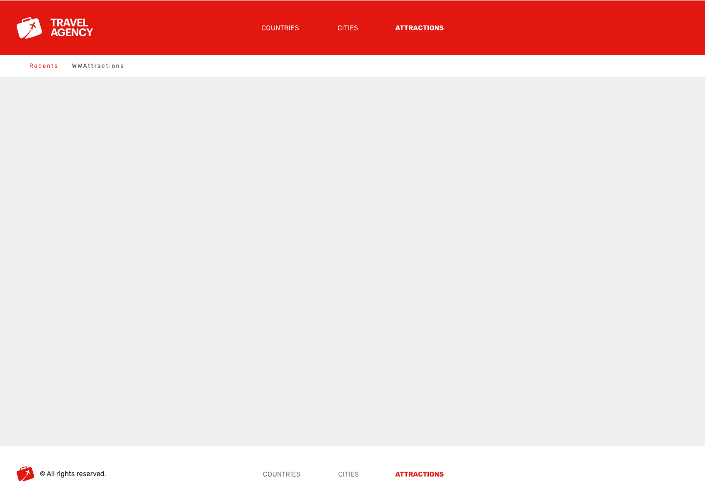 | ViewCountryDetail Master Page: ViewMasterPage |
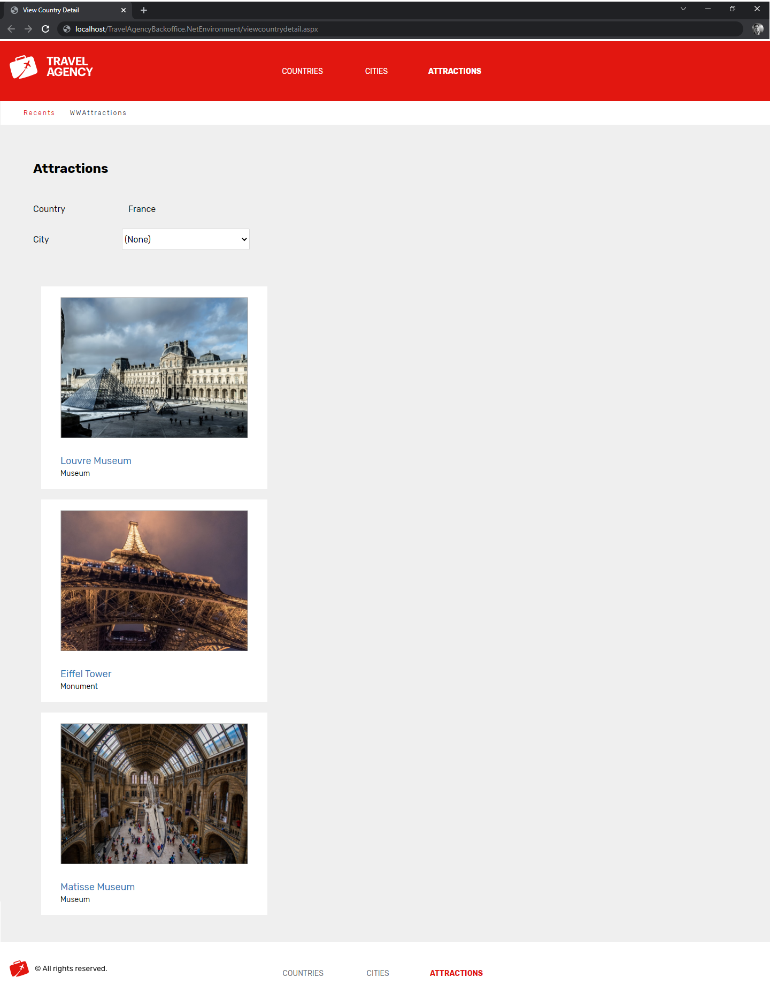 |
| Country Detail | 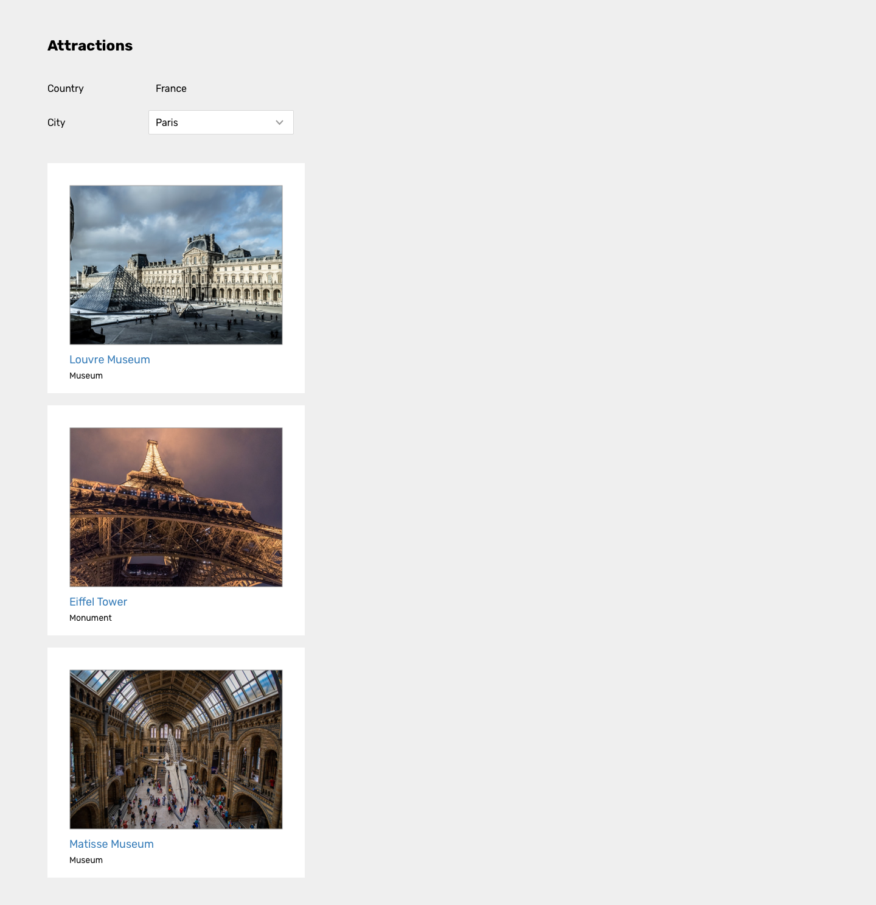 | ||
It looks great, doesn't it? And the only things you did were import the .gxsketch file and make a few changes.
Notes
- IMPORTANT
For GeneXus versions prior to build 149009, when you download the .gxsketch file, ensure it has this name before import: Travel Agency - Back office.gxsketch. Otherwise, several images will be imported as placeholders (blank images).
Scope
| Generators | .NET, .NET Core, Java, Angular |
See also
Availability
This sample has been made for GeneXus 17.
| Backlinks |
| Toc:DesignOps and GeneXus |